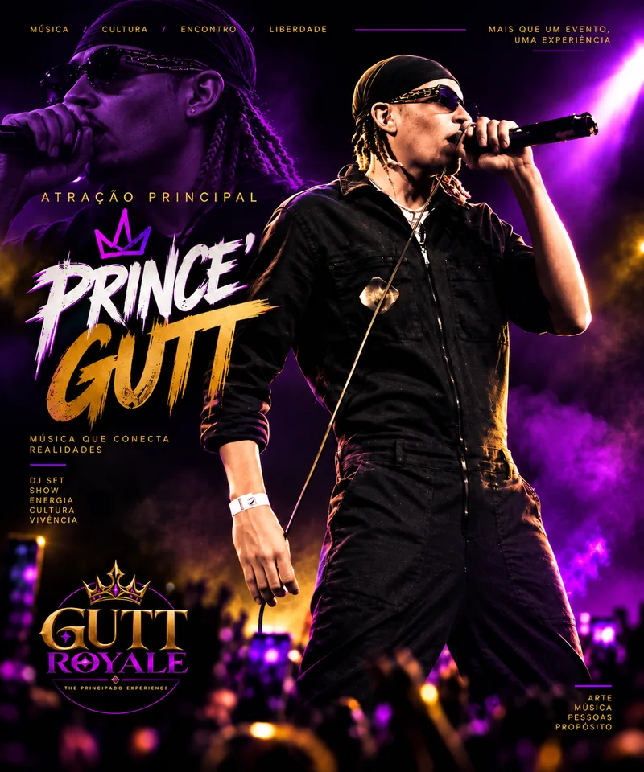

0102 / THE ROYAL LINE-UP
PRINCE'
GUTT
ATRAÇÃO PRINCIPALANIVERSARIANTE DO DIAPRODUTOR E ORGANIZADOR DA GUTT ROYALE
Prince' Gutt é rapper, produtor musical, instrumentista e modelo da Zona Norte do Rio de Janeiro. Sua discografia reúne o álbum 4Real (2023) e singles como Visionário, Versace, Plano e Parabéns; os dois últimos chegaram em 2026 pela CAZIMU.
No GUTT ROYALE, ocupa o centro da narrativa: além de atração principal e aniversariante da noite, também assina a produção e a organização do evento.
NO ROYALE
Entre palco e bastidores, Prince' Gutt funciona como eixo artístico do Royale: performance, direção de atmosfera e construção do encontro se cruzam no mesmo projeto.